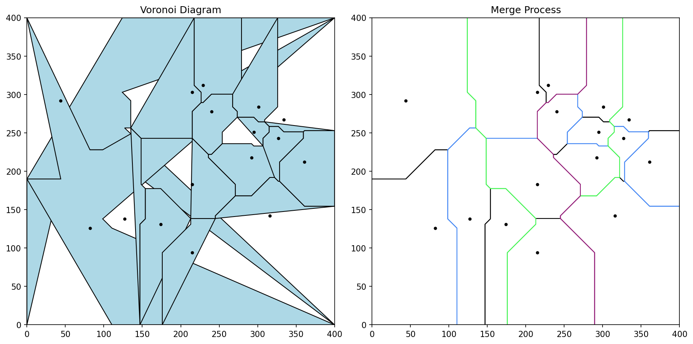
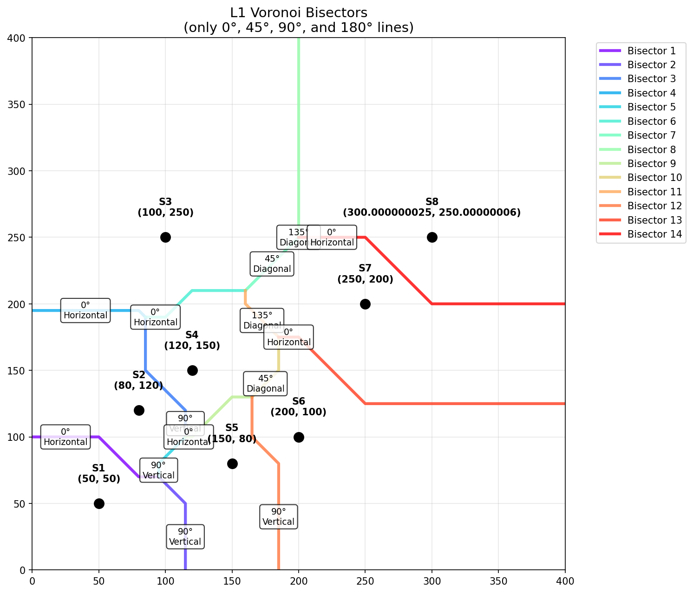

2024
A Voronoi diagram partitions a plane into regions based on distance to a set of points (sites).
V(pi) = {x ∈ ℝ2 : d(x, pi) ≤ d(x, pj) ∀j ≠ i}
graph TD
A[Plane with Points] --> B[Voronoi Tessellation]
B --> C[Region 1]
B --> D[Region 2]
B --> E[Region 3]
C --> C1[Closest to Site 1]
D --> D1[Closest to Site 2]
E --> E1[Closest to Site 3]| Metric | Formula | Visual |
|---|---|---|
| Euclidean | $d_E(p, q) = \sqrt{(x_2-x_1)^2 + (y_2-y_1)^2}$ | Circle |
| L1 (Manhattan) | d1(p, q) = ∥x2 − x1∥+∥y2 − y1∥ | Diamond (rotated square) |
quadrantChart
title Distance Metric Comparison
x-axis "Vertical Movement" --> "More"
y-axis "Horizontal Movement" --> "More"
quadrant-1 "L1: diamond shape"
quadrant-2 "Euclidean: circular"
quadrant-3 "Both: linear paths"
quadrant-4 "Complex cases"For L1 distance, the bisector between two points P1(x1, y1) and P2(x2, y2):
$$ \begin{cases} x = \frac{x_1 + x_2}{2} & \text{if } |x_1 - x_2| > |y_1 - y_2| \text{ (vertical)}\\[8pt] y = \frac{y_1 + y_2}{2} & \text{if } |y_1 - y_2| > |x_1 - x_2| \text{ (horizontal)}\\[8pt] y = \pm x + c & \text{if } |x_1 - x_2| = |y_1 - y_2| \text{ (diagonal } \pm 45^\circ\text{)} \end{cases} $$
When |x1 − x2| = |y1 − y2|, the bisector is ambiguous (a square region where both points are equidistant)!
Solution: Point nudging - slightly perturb points to avoid equality:
def clean_data(data):
for i, e in enumerate(data):
for j, d in enumerate(data):
if i != j and abs(d[0] - e[0]) == abs(d[1] - e[1]):
d[0] = d[0] + 1e-10 * d[1]
d[1] = d[1] + 2e-10 * d[0]
return dataflowchart TD
A[Start: N Points] --> B{Split}
B -->|Recursive| C[Left: N/2]
B -->|Recursive| D[Right: N/2]
C --> E{≤2 Points?}
D --> F{≤2 Points?}
E -->|Yes| G[Compute Bisector]
F -->|Yes| H[Compute Bisector]
G --> I[Merge]
H --> I
I --> J[Walk Merge Line]
J --> K[Final Voronoi Diagram]Complexity: O(nlog n)
Given two sites P1 and P2:
def find_l1_bisector(p1, p2, width, height):
x_dist = p1.x - p2.x
y_dist = p1.y - p2.y
midpoint = [(p1.x + p2.x)/2, (p1.y + p2.y)/2]
# Vertical bisector (horizontal line)
if abs(x_dist) == 0:
return [[0, midpoint[1]], [width, midpoint[1]]]
# Horizontal bisector (vertical line)
if abs(y_dist) == 0:
return [[midpoint[0], 0], [midpoint[0], height]]
# Diagonal at 45°
slope = -1 if y_dist / x_dist > 0 else 1
intercept = midpoint[1] - midpoint[0] * slope
# ... compute intersection points with boundaryflowchart TD
A[8 Points] --> B[Split: 4 + 4]
B --> C[4 Points Left] & D[4 Points Right]
C --> E[Split: 2 + 2]
D --> F[Split: 2 + 2]
E --> G[2 Points: Compute Bisector]
E --> H[2 Points: Compute Bisector]
F --> I[2 Points: Compute Bisector]
F --> J[2 Points: Compute Bisector]
G --> K[Merge]
H --> K
I --> K
J --> K
K --> L[Complete Diagram]Base case: When set has ≤ 2 points, compute bisector directly
The key algorithm - walking the boundary between two merged sub-diagrams:
flowchart LR
A[Initial Bisector] --> B[Find Intersection]
B --> C{New Site?}
C -->|Yes| D[Update Current Site]
C -->|No| E[Continue Walking]
D --> F[Trim Both Bisectors]
F --> B
E --> G[Done?]
G -->|No| B
G -->|Yes| H[Merge Complete]Key operations: -
bisector_intersection() - find where bisectors cross -
trim_bisector() - crop at intersection point - Handle
orphaned bisectors (trapped regions)
class Site:
def __init__(self, site):
self.site = site # [x, y] coordinates
self.bisectors = [] # List of bisectors
self.polygon_points = [] # Cell vertices
self.neighbors = [] # Adjacent sitesclass Bisector:
def __init__(self, sites, up, points, intersections):
self.sites = sites # [Site1, Site2]
self.up = True/False # Direction indicator
self.points = [] # Endpoints
self.intersections = [] # Intersection points
self.merge_line = None # Depth in recursion treeFrom our implementation:
| Image | Description |
|---|---|
 |
Final Voronoi diagram with colored cells |
 |
All bisectors shown |
pie title Cell Types in L1 Voronoi
"Horizontal Edges" : 35
"Vertical Edges" : 35
"45° Diagonal Edges" : 20
"Other" : 10Running with 8 points:
Generating clean L1 Voronoi diagram...
Points:
1. [ 50, 50]
2. [150, 80]
3. [120, 150]
4. [ 80, 120]
5. [200, 100]
6. [250, 200]
7. [300, 250]
8. [100, 250]
Successfully generated 8 Voronoi cells
Cell 1: 6 vertices
Cell 2: 5 vertices
...| Function | Purpose |
|---|---|
generate_l1_voronoi() |
Main entry point |
recursive_split() |
Divide & conquer |
walk_merge_line() |
Merge sub-diagrams |
find_l1_bisector() |
Compute L1 bisector |
bisector_intersection() |
Find crossing points |
clean_data() |
Eliminate square bisectors |
| Operation | Time | Space |
|---|---|---|
| Bisector computation | O(1) | O(1) |
| Recursive splitting | O(nlog n) | O(n) |
| Merge process | O(n) | O(n) |
| Total | O(nlog n) | O(n) |
flowchart TD
A[Input: N sites] --> B[Sort by X-coordinate]
B --> C[Recursive Split]
C --> D{Base Case?}
D -->|n > 2| C
D -->|n ≤ 2| E[Compute Bisector]
E --> F[Merge Sub-diagrams]
F --> G[Walk Merge Line]
G --> H[Trim Bisectors]
H --> I[Handle Orphans]
I --> J[Build Polygons]
J --> K[Output: Voronoi Cells]voronoi.py,
voronoi_clean.pypython demo.pyThank you! 🙏
Created from the Python implementation of Manhattan (L1) Voronoi Diagram